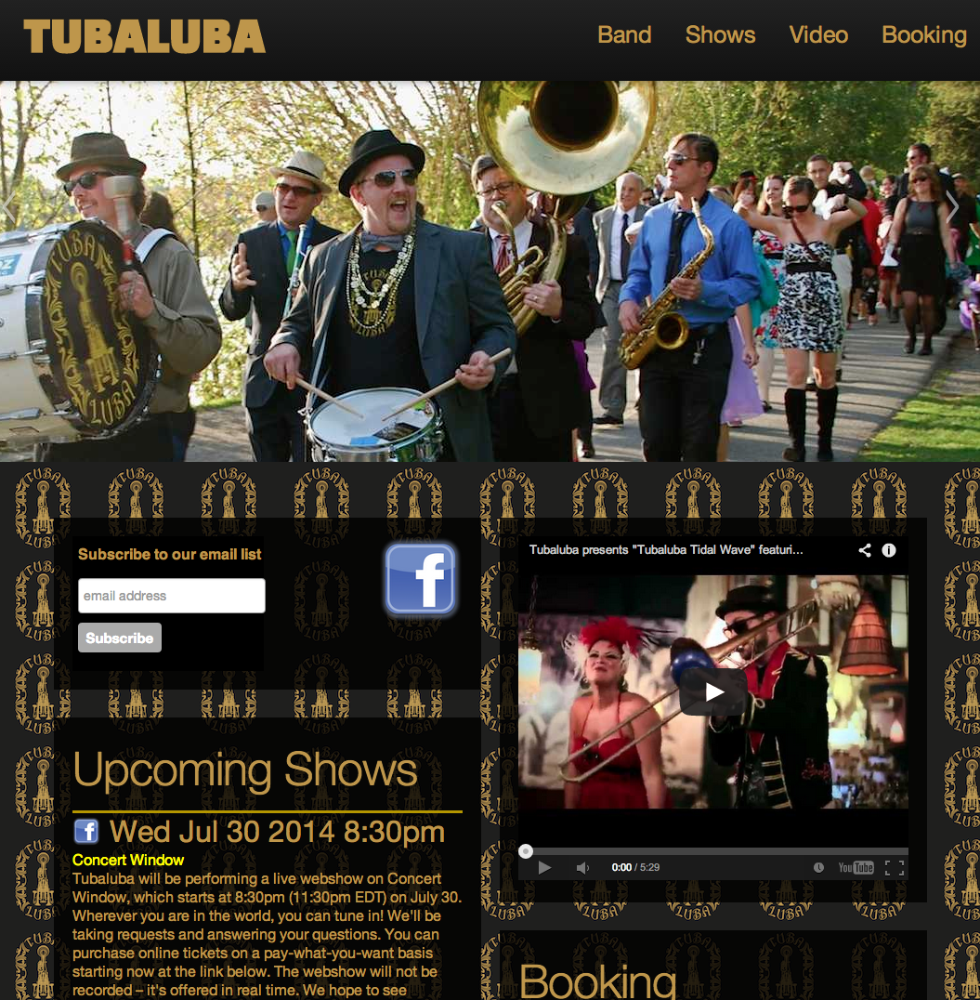
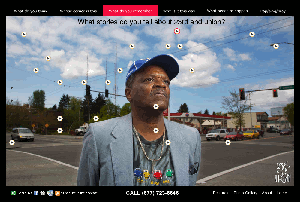
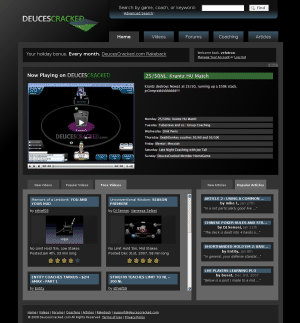
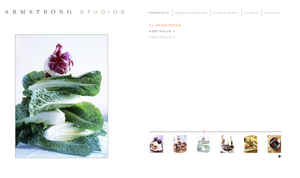
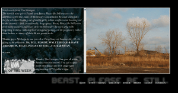
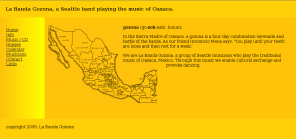
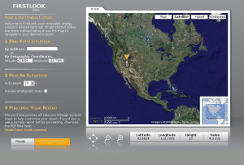
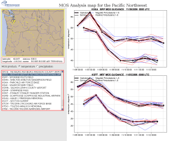
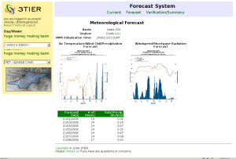
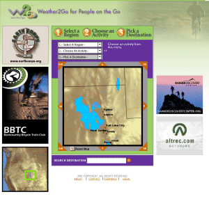

Web application development is but one tool in my toolbox, nestled among scientific visualization, analytics, and data stream management. I have been putting content on the web since 1994 and have probably used your project's tools in a production environment. Here are a few examples of web sites I have developed and deployed. If you see anything you like, please have a look at my résumé or consulting information.
TUBALUBA
Responsive site built on bootstrap, with handlebars templating for custom calendar widget.
HONK! Fest West
Developed and hosted site with graphic design help. Managed communications tools.
The Corner
Architected, developed, deployed, and maintained this application, which includes an Interactive Voice Response system which integrates with a web application.
Deuces Cracked
Lead developer on this Ruby on Rails site.
Armstrong Photo
Thanks to JKGD for the Flash work.
Beast, Please Be Still
Worked with a graphic designer to produce and host this site in XHTML/CSS.
La Banda Gozona
I host and produced this site from scratch in pure XHTML/CSS.
Firstlook
I led a team of developers and graphic designers to produce a TurboGears web application for the sale of renewable energy resource information. Heavy use of MochiKit and Genshi. I architected the design and operation of this renewable resource research tool.
Internal Weather analysis product
Weather analysis product demonstrating geographic mapping tools, and heavy use of javascript.
Internal Weather analysis product
Weather analysis product built on TurboGears, demonstrating scientific data presentation. Heavy use of MochiKit and Genshi.
Weather2Go (defunct)
Provided weather data for outdoor activities. Served by Tomcat. I developed MySQL databases for weather information, developed controller code, managed AJAX calls, and developed javascript and HTML for the front end.